Consulenza gastronomica
Sviluppo menu, identità culinarie e concept per ristoranti e progetti
gastronomici.
Scopri
di più →

La Filosofia
"È il colore delle foglie che cadono sulla terra bagnata.
È la brezza marina che ti accarezza il viso dopo la tempesta.
È il fresco rigoglio dei fiori sul bel prato.
È il profumo del fico e del finocchietto portato dal vento.
È il prezioso ciclo delle stagioni a cui mi piace tendere la mano:
è questa la cucina che amo."
Nato in Puglia tra gli ulivi di Andria, cresciuto con i nonni contadini e un padre
pasticcere, la mia passione nasce dalla terra e si affina nelle "università dei cuochi":
dall'ALMA di Gualtiero Marchesi alle 3 stelle Michelin di Georges Blanc, fino
al Ritz di
Londra.
Dopo aver lavorato come Executive Chef e docente presso il Puglia Culinary Center del
Castello di Ugento e aver contribuito a promuovere con eventi mirati la cucina italiana
in Europa e nel Mondo, oggi la mia ricerca prosegue in Sardegna tra consulenze
gastronomiche, esperienze private e progetti culinari.
La mia cucina è un intreccio di radici profonde e visione contemporanea: parto dalla
memoria per creare qualcosa di inedito.
I Servizi
Sviluppo menu, identità culinarie e concept per ristoranti e progetti
gastronomici.
Scopri
di più →
Cene d’autore ed eventi culinari su misura per occasioni speciali.
Scopri
di più →
Workshop e percorsi formativi per professionisti e appassionati.
Scopri
di più →
La Materia
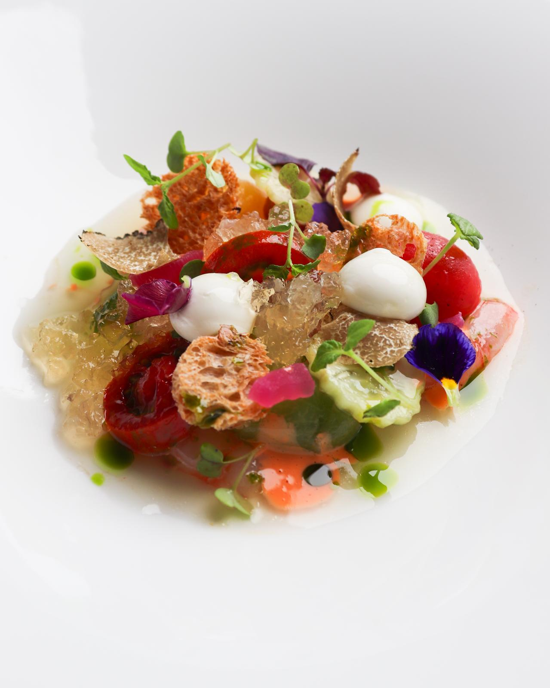
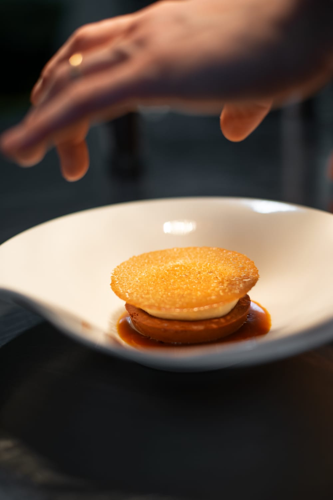
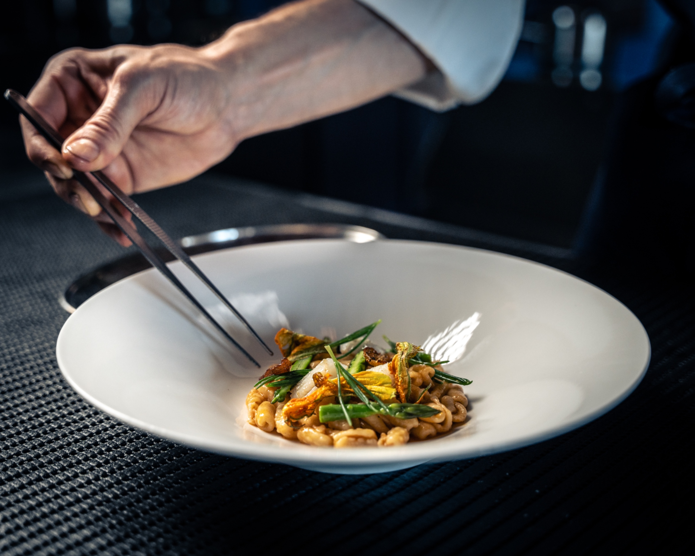
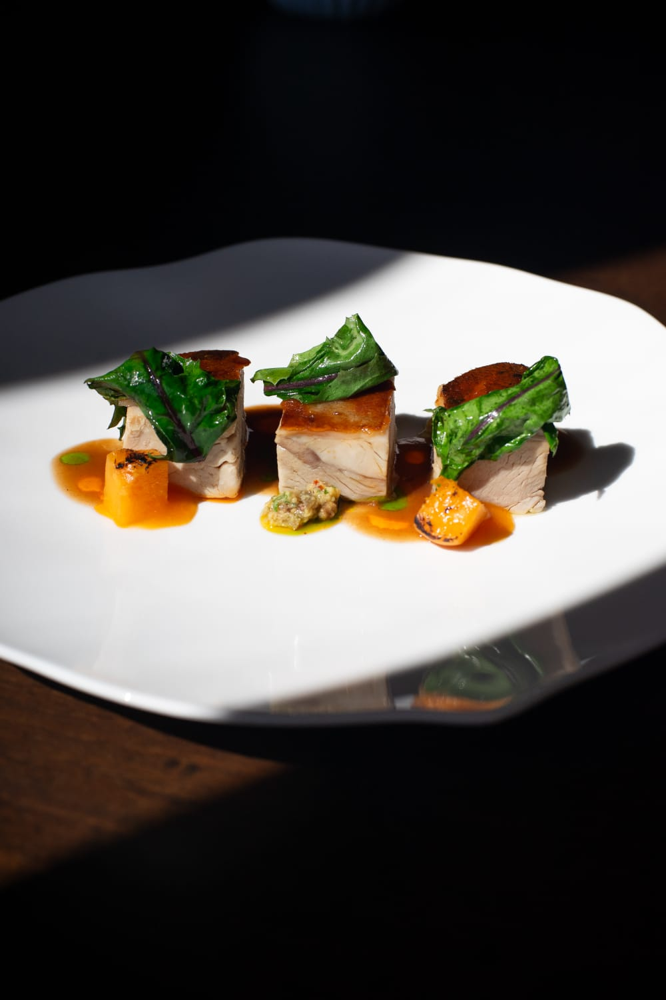
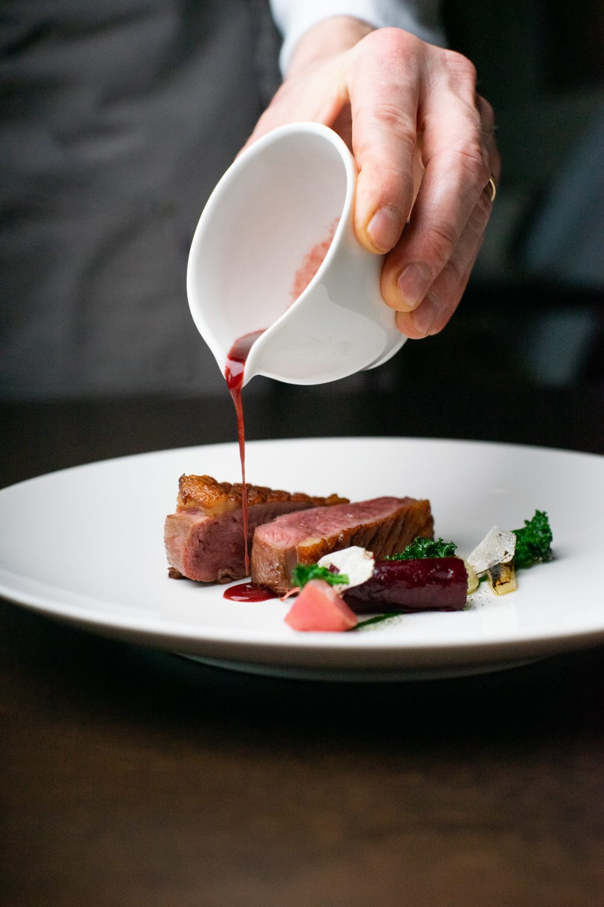
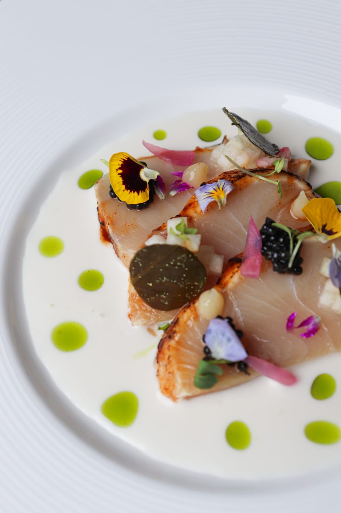
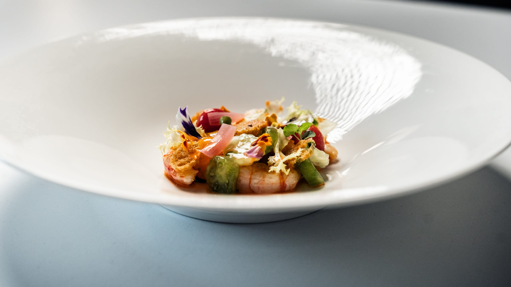

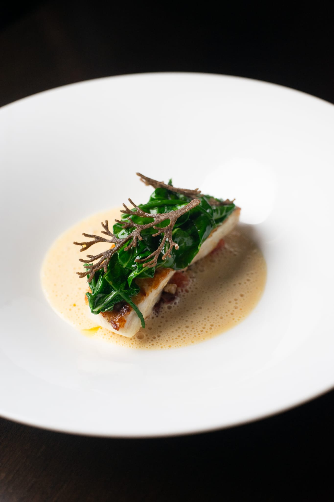

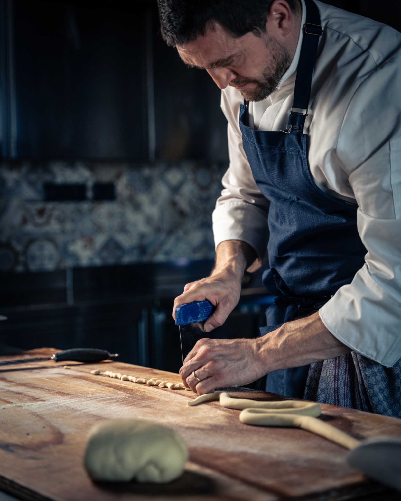
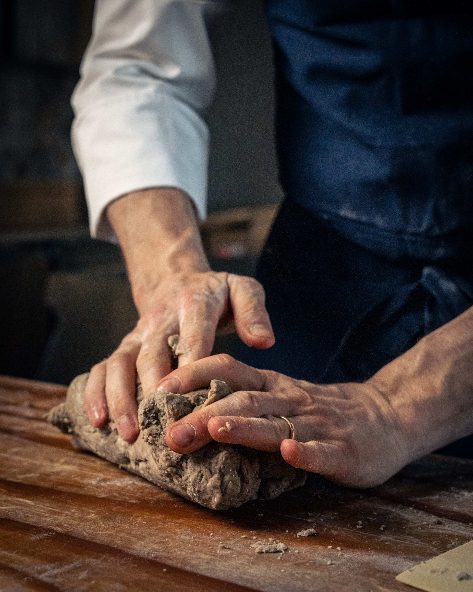
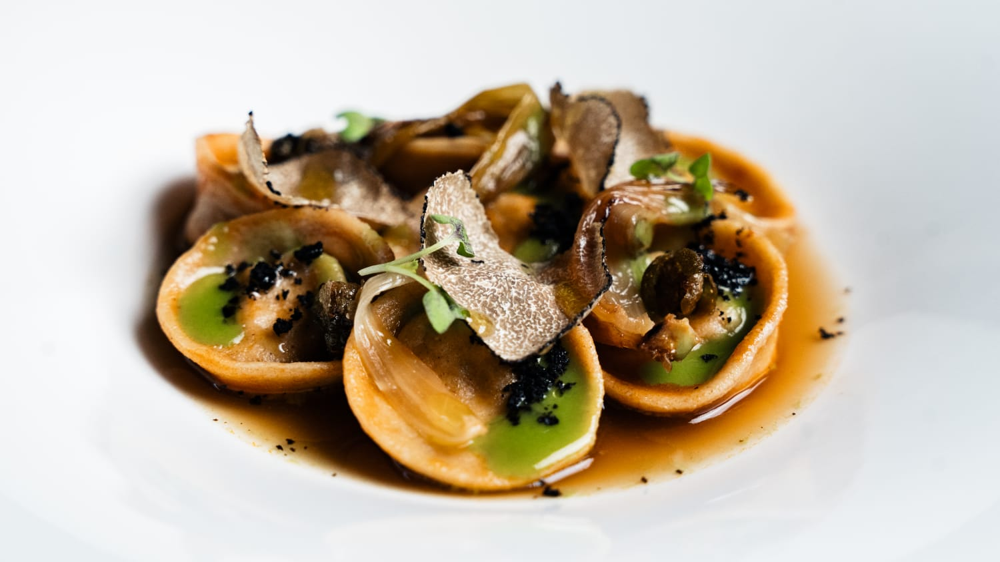

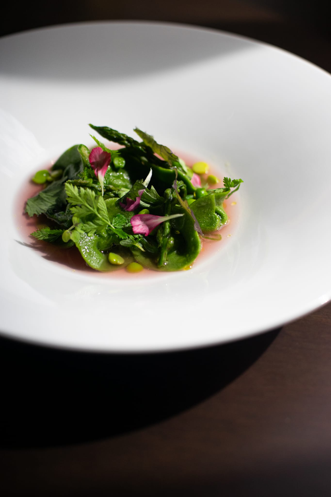
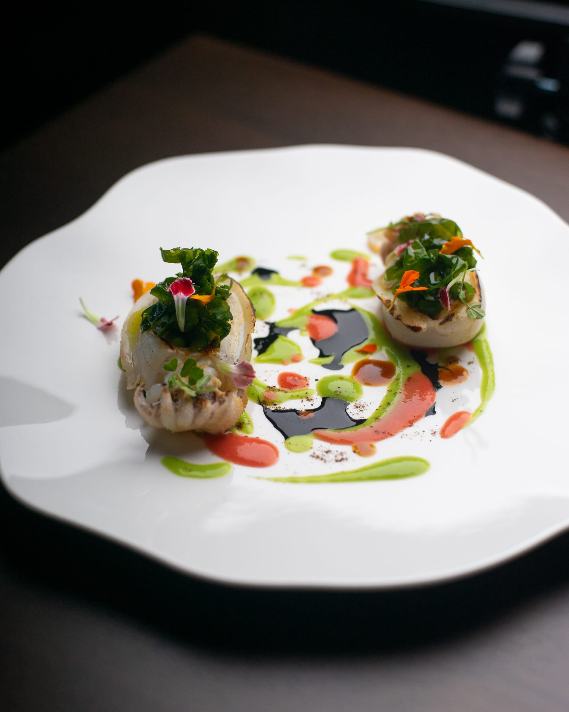
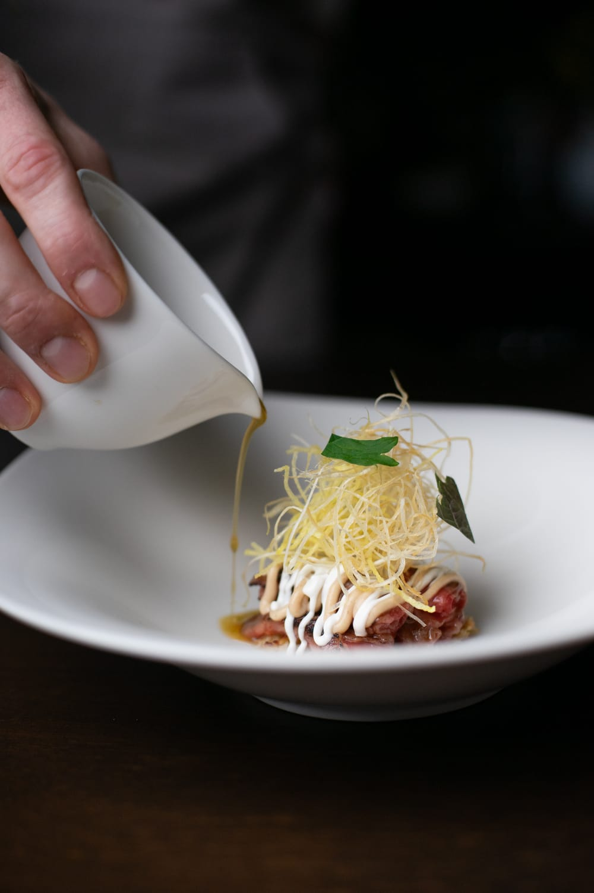
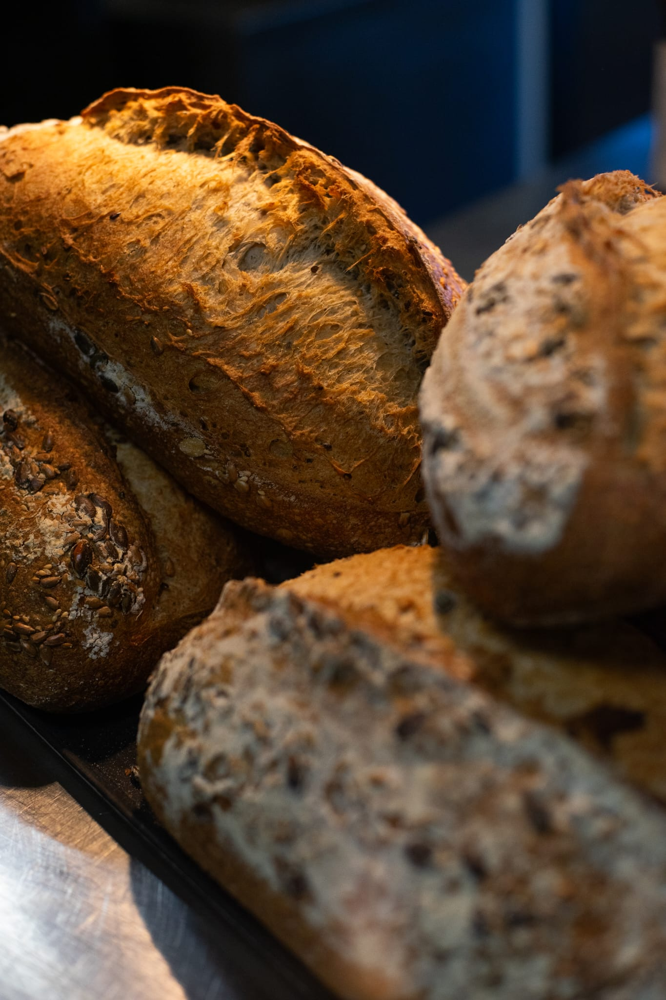
Il Dialogo
Che si tratti di un evento privato o esclusivo,
di una consulenza gastronomica
o di un’idea che ha bisogno di prendere forma il primo passo è sempre una parola.